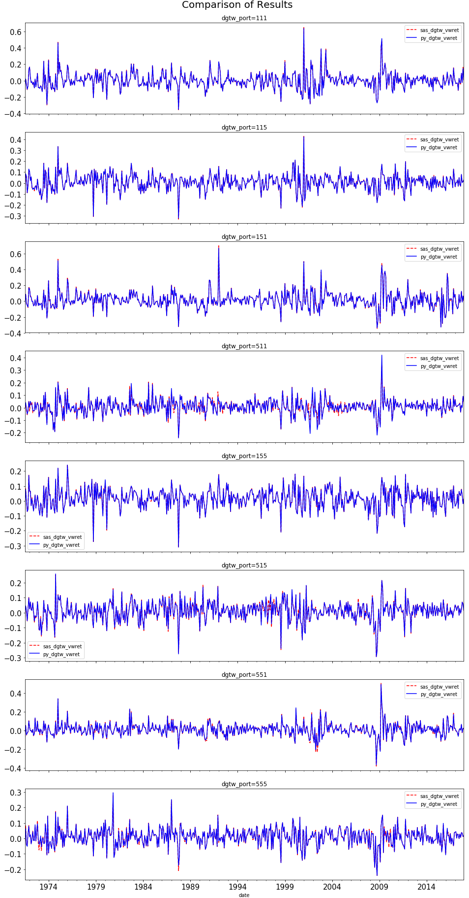

Characteristics-Based Benchmarks (DGTW)
This code is written to replicate the characteristics-based benchmarks proposed by Daniel, Grinblatt, Titman and Wermers (1997), hence the short form DGTW benchmarks. In asset pricing literature, the DGTW benchmarks are widely used to measure the performance of institutional investors based on the portfolio holdings data.
As always, the first step is to import relevant Python packages and establish connection to WRDS server.
##########################################
# Characteristics-Based Benchmarks (V4) #
# Qingyi (Freda) Song Drechsler #
# Date: May 2018 #
# Updated: April 2021 #
# #
# V3 Note: Updated book-to-market calc #
# to handle division by zero problem #
# caused by 0 marketcap #
# V4 Note: Fixed one permno to 2 dgtw #
# portfolio assignment problem #
##########################################
import pandas as pd
import numpy as np
import datetime as dt
import wrds
import matplotlib.pyplot as plt
from dateutil.relativedelta import *
from pandas.tseries.offsets import *
###################
# Connect to WRDS #
###################
conn=wrds.Connection()Pricing related information (return, price, shares outstanding) is obtained from CRSP using the following “raw_sql” step.
###################
# CRSP Block #
###################
# sql similar to crspmerge macro
# Original code set restriction on exchcd - then found out that the sas version
# did not impose the exchcd restriction - so removed everything
# added exchcd=-2,-1,0 to address the issue that stocks temp stopped trading
# without exchcd=-2,-1, 0 the non-trading months will be tossed out in the output
# leading to wrong cumret calculation in momentum step
# Code Definition
# -2 Halted by the NYSE or AMEX
# -1 Suspended by the NYSE, AMEX, or NASDAQ
# 0 Not Trading on NYSE, AMEX, or NASDAQ
# 1 New York Stock Exchange
# 2 American Stock Exchange
# 3 The Nasdaq Stock Market(SM)
crsp_m = conn.raw_sql("""
select a.permno, a.permco, b.ncusip, a.date,
b.shrcd, b.exchcd, b.siccd,
a.ret, a.vol, a.shrout, a.prc, a.cfacpr, a.cfacshr
from crsp.msf as a
left join crsp.msenames as b
on a.permno=b.permno
and b.namedt<=a.date
and a.date<=b.nameendt
where a.date between '01/01/1970' and '12/31/2017'
and b.shrcd between 10 and 11
""", date_cols = ['date'])
# change variable format to int
crsp_m[['permco','permno','shrcd','exchcd']]=\
crsp_m[['permco','permno','shrcd','exchcd']].astype(int)
# Line up date to be end of month
crsp_m['jdate']=crsp_m['date']+MonthEnd(0)
# price adjusted
crsp_m['p']=crsp_m['prc'].abs()/crsp_m['cfacpr']
# total shares out adjusted
crsp_m['tso']=crsp_m['shrout']*crsp_m['cfacshr']*1e3
# market cap in $mil
crsp_m['me'] = crsp_m['p']*crsp_m['tso']/1e6
# sum of me across different permno belonging to same permco a given date
crsp_summe = crsp_m.groupby(['jdate','permco'])['me'].sum().reset_index()\
.rename(columns={'me':'me_comp'})
crsp_m=pd.merge(crsp_m, crsp_summe, how='inner', on=['jdate','permco'])Compustat Fundamental Annual contains the financial statement related information needed for calculating book value of equity.
###################
# Compustat Block #
###################
comp = conn.raw_sql("""
select gvkey, datadate, cusip,
sich, seq, pstkrv, pstkl, pstk, txdb, itcb
from comp.funda
where indfmt='INDL'
and datafmt='STD'
and popsrc='D'
and consol='C'
and datadate >= '01/01/1970'
""", date_cols=['datadate'])
comp['year']=comp['datadate'].dt.year
# select sample where seq is greater than 0
comp = comp.loc[comp['seq']>0]
# create preferrerd stock:
# 1st choice: Preferred stock - Redemption Value
# 2nd choice: Preferred stock - Liquidating Value
# 3rd choice: Preferred stock - Carrying Value, Stock (Capital) - Total
comp['pref']=np.where(comp['pstkrv'].isnull(), comp['pstkl'], comp['pstkrv'])
comp['pref']=np.where(comp['pref'].isnull(),comp['pstk'], comp['pref'])
comp['pref']=np.where(comp['pref'].isnull(),0,comp['pref'])
# fill in missing values for deferred taxes and investment tax credit
comp['txdb']=comp['txdb'].fillna(0)
comp['itcb']=comp['itcb'].fillna(0)
# create book equity
# Daniel and Titman (JF 1997):
# BE = stockholders' equity + deferred taxes + investment tax credit - Preferred Stock
comp['be']=comp['seq']+comp['txdb']+comp['itcb']-comp['pref']
# keep only records with non-negative book equity
comp = comp.loc[comp['be']>=0]
comp=comp[['gvkey','datadate','year','be','sich']]To link these two sources together, CRSP provides a handy linking table to join the key identifiers, permco and gvkey, from both databases.
#########################
# Add Historical PERMCO #
#########################
ccm=conn.raw_sql("""
select gvkey, lpermno as permno, lpermco as permco, linktype, linkprim,
linkdt, linkenddt
from crsp.ccmxpf_linktable
where (linktype ='LU' or linktype='LC')
and linkprim in ('P', 'C') and usedflag=1
""", date_cols=['linkdt', 'linkenddt'])
# if linkenddt is missing then set to today date
ccm['linkenddt']=ccm['linkenddt'].fillna(pd.to_datetime('today'))
ccm1=pd.merge(comp,ccm,how='left',on=['gvkey'])
ccm1['jdate']=ccm1['datadate']+MonthEnd(0)
ccm1['year']=ccm1.datadate.dt.year
# Impose date ranges
ccm2 = ccm1[(ccm1['datadate']>=ccm1['linkdt'])&(ccm1['datadate']<=ccm1['linkenddt'])].drop(columns=['linktype', 'linkdt', 'linkenddt'])
comp1 = pd.merge(ccm2, crsp_m[['permno','permco','date','jdate','siccd','me','me_comp']], how='inner', on=['permco', 'permno', 'jdate'])
# Edit December 2020: correct the division by 0 problem caused by missing market cap
# Use a conditioning statement to address this problem
# Old Code: comp3['bm']=comp3['be'].div(comp3['me_comp'])
# New calculation
comp1['bm'] = np.where(comp1.me_comp>0, comp1.be / comp1.me_comp, np.nan)
comp2 = comp1.sort_values(['permno', 'year', 'datadate', 'linkprim', 'bm'])\
.drop_duplicates()
# pick max datadate for a given permno year combo (firm changes fiscal period)
maxdatadate=comp2.groupby(['permno','year'])['datadate'].max()\
.reset_index()
comp3 = pd.merge(comp2, maxdatadate, how='inner', on=['permno','year','datadate'])Below is a somewhat clumsy function to assign stocks into Fama-French 48 industry classification based on the historical SIC codes. Please refer to Ken French’s site for a detailed text file describing the classification scheme.
#########################
# Assign Fama-French 48 #
#########################
# function to assign ffi48 classification
def ffi48(row):
if (100<=row['sic'] <=299) or (700<=row['sic']<=799) or (910<=row['sic']<=919) or (row['sic']==2048):
ffi48=1
ffi48_desc='Agric'
elif (2000<=row['sic']<=2046) or (2050<=row['sic']<=2063) or (2070<=row['sic']<=2079)\
or (2090<=row['sic']<=2092) or (row['sic']==2095) or (2098<=row['sic']<=2099):
ffi48=2
ffi48_desc='Food'
elif (2064<=row['sic']<=2068) or (2086<=row['sic']<=2087) or (2096<=row['sic']<=2097):
ffi48=3
ffi48_desc='Soda'
elif (row['sic']==2080) or (2082<=row['sic']<=2085):
ffi48=4
ffi48_desc='Beer'
elif (2100<=row['sic']<=2199):
ffi48=5
ffi48_desc='Smoke'
elif (920<=row['sic']<=999) or (3650<=row['sic']<=3652) or (row['sic']==3732) or (3930<=row['sic']<=3931) or (3940<=row['sic']<=3949):
ffi48=6
ffi48_desc='Toys'
elif (7800<=row['sic']<=7833) or (7840<=row['sic']<=7841) or(row['sic']==7900)or (7910<=row['sic']<=7911) or (7920<=row['sic']<=7933)\
or (7940<=row['sic']<=7949) or (row['sic']==7980) or (7990<=row['sic']<=7999):
ffi48=7
ffi48_desc='Fun'
elif (2700<=row['sic']<=2749) or (2770<=row['sic']<=2771) or (2780<=row['sic']<=2799):
ffi48=8
ffi48_desc='Books'
elif (row['sic']==2047) or (2391<=row['sic']<=2392) or (2510<=row['sic']<=2519) or (2590<=row['sic']<=2599) or (2840<=row['sic']<=2844)\
or (3160<=row['sic']<=3161) or (3170<=row['sic']<=3172) or (3190<=row['sic']<=3199) or (row['sic']==3229) or (row['sic']==3260)\
or (3262<=row['sic']<=3263) or (row['sic']==3269) or (3230<=row['sic']<=3231) or(3630<=row['sic']<=3639) or (3750<=row['sic']<=3751)\
or (row['sic']==3800) or (3860<=row['sic']<=3861) or (3870<=row['sic']<=3873) or (3910<=row['sic']<=3911) or (3914<=row['sic']<=3915)\
or (3960<=row['sic']<=3962) or (row['sic']==3991) or (row['sic']==3995):
ffi48=9
ffi48_desc='Hshld'
elif (2300<=row['sic']<=2390) or (3020<=row['sic']<=3021) or (3100<=row['sic']<=3111)\
or (3130<=row['sic']<=3131) or (3140<=row['sic']<=3151) or (3963<=row['sic']<=3965):
ffi48=10
ffi48_desc='Clths'
elif (8000<=row['sic']<=8099):
ffi48=11
ffi48_desc='Hlth'
elif (row['sic']==3693) or (3840<=row['sic']<=3851):
ffi48=12
ffi48_desc='MedEq'
elif (2830<=row['sic']<=2831) or (2833<=row['sic']<=2836):
ffi48=13
ffi48_desc='Drugs'
elif (2800<=row['sic']<=2829) or (2850<=row['sic']<=2879) or (2890<=row['sic']<=2899):
ffi48=14
ffi48_desc='Chems'
elif (row['sic']==3031) or (row['sic']==3041) or (3050<=row['sic']<=3053) or (3060<=row['sic']<=3069) or (3070<=row['sic']<=3099):
ffi48=15
ffi48_desc='Rubbr'
elif (2200<=row['sic']<=2284) or (2290<=row['sic']<=2295) or (2297<=row['sic']<=2299) or (2393<=row['sic']<=2395) or (2397<=row['sic']<=2399):
ffi48=16
ffi48_desc='Txtls'
elif (800<=row['sic']<=899) or (2400<=row['sic']<=2439) or (2450<=row['sic']<=2459) or (2490<=row['sic']<=2499) or (2660<=row['sic']<=2661)\
or (2950<=row['sic']<=2952) or (row['sic']==3200) or (3210<=row['sic']<=3211) or (3240<=row['sic']<=3241) or (3250<=row['sic']<=3259)\
or (row['sic']==3261) or (row['sic']==3264) or (3270<=row['sic']<=3275) or (3280<=row['sic']<=3281) or (3290<=row['sic']<=3293)\
or (3295<=row['sic']<=3299) or (3420<=row['sic']<=3433) or (3440<=row['sic']<=3442) or (row['sic']==3446) or (3448<=row['sic']<=3452)\
or (3490<=row['sic']<=3499) or (row['sic']==3996):
ffi48=17
ffi48_desc='BldMt'
elif (1500<=row['sic']<=1511) or (1520<=row['sic']<=1549) or (1600<=row['sic']<=1799):
ffi48=18
ffi48_desc='Cnstr'
elif (row['sic']==3300) or (3310<=row['sic']<=3317) or (3320<=row['sic']<=3325) or (3330<=row['sic']<=3341) or(3350<=row['sic']<=3357)\
or (3360<=row['sic']<=3379) or (3390<=row['sic']<=3399):
ffi48=19
ffi48_desc='Steel'
elif (row['sic']==3400) or (3443<=row['sic']<=3444) or (3460<=row['sic']<=3479):
ffi48=20
ffi48_desc='FabPr'
elif (3510<=row['sic']<=3536) or (row['sic']==3538) or (3540<=row['sic']<=3569)\
or (3580<=row['sic']<=3582) or (3585<=row['sic']<=3586) or (3589<=row['sic']<=3599):
ffi48=21
ffi48_desc='Mach'
elif (row['sic']==3600) or (3610<=row['sic']<=3613) or (3620<=row['sic']<=3621) or (3623<=row['sic']<=3629) or (3640<=row['sic']<=3646)\
or (3648<=row['sic']<=3649) or (row['sic']==3660) or (3690<=row['sic']<=3692) or (row['sic']==3699):
ffi48=22
ffi48_desc='ElcEq'
elif (row['sic']==2296) or (row['sic']==2396) or (3010<=row['sic']<=3011) or (row['sic']==3537) or (row['sic']==3647) or (row['sic']==3694)\
or (row['sic']==3700) or (3710<=row['sic']<=3711) or (3713<=row['sic']<=3716) or (3790<=row['sic']<=3792) or (row['sic']==3799):
ffi48=23
ffi48_desc='Autos'
elif (3720<=row['sic']<=3721) or (3723<=row['sic']<=3725) or (3728<=row['sic']<=3729):
ffi48=24
ffi48_desc='Aero'
elif (3730<=row['sic']<=3731) or (3740<=row['sic']<=3743):
ffi48=25
ffi48_desc='Ships'
elif (3760<=row['sic']<=3769) or (row['sic']==3795) or (3480<=row['sic']<=3489):
ffi48=26
ffi48_desc='Guns'
elif (1040<=row['sic']<=1049):
ffi48=27
ffi48_desc='Gold'
elif (1000<=row['sic']<=1039) or (1050<=row['sic']<=1119) or (1400<=row['sic']<=1499):
ffi48=28
ffi48_desc='Mines'
elif (1200<=row['sic']<=1299):
ffi48=29
ffi48_desc='Coal'
elif (row['sic']==1300) or (1310<=row['sic']<=1339) or (1370<=row['sic']<=1382) or (row['sic']==1389) or (2900<=row['sic']<=2912) or (2990<=row['sic']<=2999):
ffi48=30
ffi48_desc='Oil'
elif (row['sic']==4900) or (4910<=row['sic']<=4911) or (4920<=row['sic']<=4925) or (4930<=row['sic']<=4932) or (4939<=row['sic']<=4942):
ffi48=31
ffi48_desc='Util'
elif (row['sic']==4800) or (4810<=row['sic']<=4813) or (4820<=row['sic']<=4822) or (4830<=row['sic']<=4841) or (4880<=row['sic']<=4892) or (row['sic']==4899):
ffi48=32
ffi48_desc='Telcm'
elif (7020<=row['sic']<=7021) or (7030<=row['sic']<=7033) or (row['sic']==7200) or (7210<=row['sic']<=7212) or (7214<=row['sic']<=7217)\
or (7219<=row['sic']<=7221) or (7230<=row['sic']<=7231) or (7240<=row['sic']<=7241) or (7250<=row['sic']<=7251) or (7260<=row['sic']<=7299)\
or (row['sic']==7395) or (row['sic']==7500) or (7520<=row['sic']<=7549) or (row['sic']==7600) or (row['sic']==7620)\
or (7622<=row['sic']<=7623) or (7629<=row['sic']<=7631) or (7640<=row['sic']<=7641) or (7690<=row['sic']<=7699) or (8100<=row['sic']<=8499)\
or (8600<=row['sic']<=8699) or (8800<=row['sic']<=8899) or (7510<=row['sic']<=7515):
ffi48=33
ffi48_desc='PerSv'
elif (2750<=row['sic']<=2759) or (row['sic']==3993) or (row['sic']==7218) or (row['sic']==7300) or (7310<=row['sic']<=7342)\
or (7349<=row['sic']<=7353) or (7359<=row['sic']<=7372) or (7374<=row['sic']<=7385) or (7389<=row['sic']<=7394) or (7396<=row['sic']<=7397)\
or (row['sic']==7399) or (row['sic']==7519) or (row['sic']==8700) or (8710<=row['sic']<=8713) or (8720<=row['sic']<=8721) \
or (8730<=row['sic']<=8734) or (8740<=row['sic']<=8748) or (8900<=row['sic']<=8911) or (8920<=row['sic']<=8999) or (4220<=row['sic']<=4229):
ffi48=34
ffi48_desc='BusSv'
elif (3570<=row['sic']<=3579) or (3680<=row['sic']<=3689) or (row['sic']==3695) or (row['sic']==7373):
ffi48=35
ffi48_desc='Comps'
elif (row['sic']==3622) or (3661<=row['sic']<=3666) or (3669<=row['sic']<=3679) or (row['sic']==3810) or (row['sic']==3812):
ffi48=36
ffi48_desc='Chips'
elif (row['sic']==3811) or (3820<=row['sic']<=3827) or (3829<=row['sic']<=3839):
ffi48=37
ffi48_desc='LabEq'
elif (2520<=row['sic']<=2549) or (2600<=row['sic']<=2639) or (2670<=row['sic']<=2699) or (2760<=row['sic']<=2761) or (3950<=row['sic']<=3955):
ffi48=38
ffi48_desc='Paper'
elif (2440<=row['sic']<=2449) or (2640<=row['sic']<=2659) or (3220<=row['sic']<=3221) or (3410<=row['sic']<=3412):
ffi48=39
ffi48_desc='Boxes'
elif (4000<=row['sic']<=4013) or (4040<=row['sic']<=4049) or (row['sic']==4100) or (4110<=row['sic']<=4121) or (4130<=row['sic']<=4131)\
or (4140<=row['sic']<=4142) or (4150<=row['sic']<=4151) or (4170<=row['sic']<=4173) or (4190<=row['sic']<=4200)\
or (4210<=row['sic']<=4219) or (4230<=row['sic']<=4231) or (4240<=row['sic']<=4249) or (4400<=row['sic']<=4700) or (4710<=row['sic']<=4712)\
or (4720<=row['sic']<=4749) or (row['sic']==4780) or (4782<=row['sic']<=4785) or (row['sic']==4789):
ffi48=40
ffi48_desc='Trans'
elif (row['sic']==5000) or (5010<=row['sic']<=5015) or (5020<=row['sic']<=5023) or (5030<=row['sic']<=5060) or (5063<=row['sic']<=5065)\
or (5070<=row['sic']<=5078) or (5080<=row['sic']<=5088) or (5090<=row['sic']<=5094) or (5099<=row['sic']<=5100)\
or (5110<=row['sic']<=5113) or (5120<=row['sic']<=5122) or (5130<=row['sic']<=5172) or (5180<=row['sic']<=5182) or (5190<=row['sic']<=5199):
ffi48=41
ffi48_desc='Whlsl'
elif (row['sic']==5200) or (5210<=row['sic']<=5231) or (5250<=row['sic']<=5251) or (5260<=row['sic']<=5261) or (5270<=row['sic']<=5271)\
or (row['sic']==5300) or (5310<=row['sic']<=5311) or (row['sic']==5320) or (5330<=row['sic']<=5331) or (row['sic']==5334)\
or (5340<=row['sic']<=5349) or (5390<=row['sic']<=5400) or (5410<=row['sic']<=5412) or (5420<=row['sic']<=5469) or (5490<=row['sic']<=5500)\
or (5510<=row['sic']<=5579) or (5590<=row['sic']<=5700) or (5710<=row['sic']<=5722) or (5730<=row['sic']<=5736) or (5750<=row['sic']<=5799)\
or (row['sic']==5900) or (5910<=row['sic']<=5912) or (5920<=row['sic']<=5932) or (5940<=row['sic']<=5990) or (5992<=row['sic']<=5995) or (row['sic']==5999):
ffi48=42
ffi48_desc='Rtail'
elif (5800<=row['sic']<=5829) or (5890<=row['sic']<=5899) or (row['sic']==7000) or (7010<=row['sic']<=7019) or (7040<=row['sic']<=7049) or (row['sic']==7213):
ffi48=43
ffi48_desc='Meals'
elif (row['sic']==6000) or (6010<=row['sic']<=6036) or (6040<=row['sic']<=6062) or (6080<=row['sic']<=6082) or (6090<=row['sic']<=6100)\
or (6110<=row['sic']<=6113) or (6120<=row['sic']<=6179) or (6190<=row['sic']<=6199):
ffi48=44
ffi48_desc='Banks'
elif (row['sic']==6300) or (6310<=row['sic']<=6331) or (6350<=row['sic']<=6351) or (6360<=row['sic']<=6361) or (6370<=row['sic']<=6379) or (6390<=row['sic']<=6411):
ffi48=45
ffi48_desc='Insur'
elif (row['sic']==6500) or (row['sic']==6510) or (6512<=row['sic']<=6515) or (6517<=row['sic']<=6532) or (6540<=row['sic']<=6541)\
or (6550<=row['sic']<=6553) or (6590<=row['sic']<=6599) or (6610<=row['sic']<=6611):
ffi48=46
ffi48_desc='RlEst'
elif (6200<=row['sic']<=6299) or (row['sic']==6700) or (6710<=row['sic']<=6726) or (6730<=row['sic']<=6733) or (6740<=row['sic']<=6779)\
or (6790<=row['sic']<=6795) or (6798<=row['sic']<=6799):
ffi48=47
ffi48_desc='Fin'
elif (4950<=row['sic']<=4961) or (4970<=row['sic']<=4971) or (4990<=row['sic']<=4991) or (row['sic']==9999):
ffi48=48
ffi48_desc='Other'
else:
ffi48=np.nan
ffi48_desc=''
return pd.Series({'sic': row['sic'], 'ffi48': ffi48, 'ffi48_desc': ffi48_desc})The function “ffi48” is then applied to the data frame containing joint information of CRSP and Compustat created in the previous step to assign each stock to its proper Fama-French 48 Industry group.
# assign SIC code
comp4 = comp3
# First use historical Compustat SIC Code
# Then if missing use historical CRSP SIC Code
comp4['sic']=np.where(comp4['sich']>0, comp4['sich'], comp4['siccd'])
# and adjust some SIC code to fit F&F 48 ind delineation
comp4['sic']=np.where((comp4['sic'].isin([3990, 9995, 9997])) & (comp4['siccd']>0) & (comp4['sic'] != comp4['siccd']), \
comp4['siccd'], comp4['sic'])
comp4['sic']=np.where(comp4['sic'].isin([3990,3999]), 3991, comp4['sic'])
comp4['sic']=comp4.sic.astype(int)
# assign the ffi48 function to comp4
_sic = comp4['sic'].unique()
_sicff = pd.DataFrame(_sic).rename(columns={0:'sic'})
_sicff = _sicff.apply(ffi48, axis=1)
comp4 = pd.merge(comp4, _sicff, how='left', on=['sic'])
# keep only records with non-missing bm and ffi48 classification
comp4 = comp4[(comp4['bm'] != np.NaN) & (comp4['ffi48_desc'] !='')]
comp4 = comp4.drop(['sich','siccd','datadate'], axis=1)
comp4=comp4.sort_values(['ffi48','year'])Now that we have created an industry classification scheme, the rest are quite straightforward. AS DGTW benchmarks performance based on value, momentum and size of the stocks, we need to calculate the industry averages of these metrics.
Let’s start with the Book-to-Market ratio.
#########################
# Industry BM Average #
#########################
# Calculate BM Industry Average Each Period
comp4_tmp = comp4[(comp4['ffi48']>0)&(comp4['bm']>=0)]
bm_ind = comp4_tmp.groupby(['ffi48','year'])['bm'].mean().reset_index().rename(columns={'bm':'bmind'})
# Calculate Long-Term Industry BtM Average
bm_ind['n'] = bm_ind.groupby(['ffi48'])['year'].cumcount()
bm_ind['sumbm']=bm_ind.groupby(['ffi48'])['bmind'].cumsum()
bm_ind['bmavg'] = bm_ind['sumbm']/(bm_ind['n']+1)
bm_ind = bm_ind.drop(['n','sumbm'], axis=1)
# Adjust Firm-Specific BtM with Industry Averages
comp5 = pd.merge(comp4, bm_ind, how='left',on=['ffi48','year'])
comp5['bm_adj'] = comp5['bm']-comp5['bmavg']Next is to create the momentum factors for the industry groups.
#########################
# Momentum Factor #
#########################
# Create (12,1) Momentum Factor with at least 6 months of returns
_tmp_crsp = crsp_m[['permno','date','ret', 'me', 'exchcd']].sort_values(['permno','date']).set_index('date')
#replace missing return with 0
_tmp_crsp['ret']=_tmp_crsp['ret'].fillna(0)
_tmp_crsp['logret']=np.log(1+_tmp_crsp['ret'])
_tmp_cumret = _tmp_crsp.groupby(['permno'])['logret'].rolling(12, min_periods=7).sum()
_tmp_cumret = _tmp_cumret.reset_index()
_tmp_cumret['cumret']=np.exp(_tmp_cumret['logret'])-1
sizemom = pd.merge(_tmp_crsp.reset_index(), _tmp_cumret[['permno','date','cumret']], how='left', on=['permno','date'])
sizemom['mom']=sizemom.groupby('permno')['cumret'].shift(1)
sizemom=sizemom[sizemom['date'].dt.month==6].drop(['logret','cumret'], axis=1).rename(columns={'me':'size'})Third is to create size portfolios based on the NYSE stocks size breakpoints.
#########################
# NYSE Size Breakpoint #
#########################
# Get Size Breakpoints for NYSE firms
sizemom=sizemom.sort_values(['date','permno']).drop_duplicates()
nyse = sizemom[sizemom['exchcd']==1]
nyse_break = nyse.groupby(['date'])['size'].describe(percentiles=[.2,.4,.6,.8]).reset_index()
nyse_break = nyse_break[['date','20%','40%','60%','80%']]\
.rename(columns={'20%':'dec20', '40%':'dec40', '60%':'dec60','80%':'dec80'})
sizemom = pd.merge(sizemom, nyse_break, how='left', on='date')
# Add NYSE Size Breakpoints to the Data
def size_group(row):
if 0<=row['size'] < row['dec20']:
value = 1
elif row['size'] < row['dec40']:
value=2
elif row['size'] < row['dec60']:
value=3
elif row['size'] < row['dec80']:
value=4
elif row['size'] >= row['dec80']:
value=5
else:
value=np.nan
return value
sizemom['group']=sizemom.apply(size_group, axis=1)
sizemom['year']=sizemom['date'].dt.year-1
sizemom=sizemom[['permno','date','year','mom','group','size','ret']]
# Adjusted BtM from the calendar year preceding the formation date
comp6=comp5[['gvkey','permno','year','bm_adj']]
comp6=pd.merge(comp6, sizemom, how='inner', on=['permno','year'])
comp6=comp6.dropna(subset=['size','mom','bm_adj','ret'], how='any')The final step involves calculating size, book-to-market, and momentum controlled value-weighted portfolio returns. I really wish Python can add a value-weighted option in the mean() function. How I miss SAS “proc means” statement’s weight=size capacity.
#########################
# Size BM MOM Portfolio #
#########################
# Start the Triple Sort on Size, Book-to-Market, and Momentum
port1=comp6.sort_values(['date','group','permno']).drop_duplicates()
port1['bmr']=port1.groupby(['date','group'])['bm_adj'].transform(lambda x: pd.qcut(x, 5, labels=False,duplicates='drop'))
port2 = port1.sort_values(['date','group','bmr'])
port2['momr']=port2.groupby(['date','group','bmr'])['mom'].transform(lambda x: pd.qcut(x, 5, labels=False,duplicates='drop'))
# DGTW_PORT 1 for Bottom Quintile, 5 for Top Quintile
port3=port2
port3['bmr']=port3['bmr']+1
port3['momr']=port3['momr']+1
port3[['group','bmr','momr']]=port3[['group','bmr','momr']].astype(int).astype(str)
port3['dgtw_port']=port3['group']+port3['bmr']+port3['momr']
port4 = port3[['permno','gvkey','date','size','mom','bm_adj','dgtw_port']]
port4['date']=port4['date']+MonthEnd(0)
port4['jyear']=port4['date'].dt.year
port4=port4.sort_values(['permno','date'])
port4=port4.rename(columns={'date':'formdate', 'size':'sizew'})
port4=port4[['permno','formdate','jyear','sizew','dgtw_port']]
crsp_m1= crsp_m[['permno','date','ret']]
crsp_m1['date']=crsp_m1['date']+MonthEnd(0)
crsp_m1['jdate']=crsp_m1['date']+MonthEnd(-6)
crsp_m1['jyear']=crsp_m1['jdate'].dt.year
crsp_m1 = pd.merge(crsp_m1.drop(['jdate'],axis=1), port4, how='left', on=['permno','jyear'])
crsp_m1 = crsp_m1.dropna(subset=['formdate','sizew','dgtw_port'], how='any')
crsp_m1 = crsp_m1.sort_values(['date','dgtw_port','permno'])
# function to calculate value weighted return
def wavg(group, avg_name, weight_name):
d = group[avg_name]
w = group[weight_name]
try:
return (d * w).sum() / w.sum()
except ZeroDivisionError:
return np.nan
# Calculate Weighted Average Returns
dgtw_vwret = crsp_m1.groupby(['date','dgtw_port']).apply(wavg, 'ret','sizew')
dgtw_vwret = dgtw_vwret.reset_index().rename(columns={0:'dgtw_vwret'})
# Calculate DGTW Excess Return
dgtw_returns = pd.merge(crsp_m1.drop(['sizew'], axis=1), dgtw_vwret, how='left', on =['dgtw_port','date'])
dgtw_returns['dgtw_xret']=dgtw_returns['ret']-dgtw_returns['dgtw_vwret']
dgtw_returns = dgtw_returns.sort_values(['permno','date']).drop_duplicates()For those of you who have already created your DGTW excess return using the sample SAS code available on WRDS website Research Application section, you may want to compare the output of this Python code to that. The correlation between the two dgtw_vwret series is 99.4%, with p-value equals 0.0.
I also plot the time series of the corner portfolios below to provide a visual comparison between the two series. The DGTW portfolio is ordered by Size, Book-to-Market and Momentum. The blue solid line represents the value-weighted portfolio return from the Python output (dgtw_vwret), and the dash red line reports the result from the SAS output.
